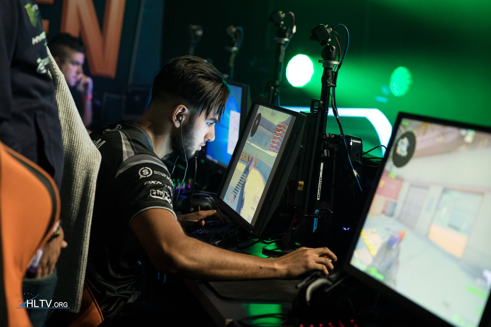

打ち合いガイド

歩きピーク (Smooth)
ゆっくりピークをして打ち合いを行う
方法
歩きながらピークをする （決め打ちのストッピングだけバージョン）
使うべき場面
- クリアリング
- 壁から遠い場面
- オペを持っている場合も有効（ADSでピーク）
コツ
- 丁寧にAIM（プリエイムなど）をすること
- ADS（覗き）をしながらしてもいいかも（壁から遠いときのみ）
- ヘッショラインを意識する
※注意
- 壁から近いところで行うと一方的に倒される （できるだけ壁から離れる、またはアビリティーを使う）
- クリアリングの時は音がならない程度に走りを入れたほうがよい
ワイドピーク (Wide-Peek)
走りでピークして打ち合うを行う
方法
普通のピークより長めに走る
使うべき場面
- 相手がオペレーターを持っているとき
- 相手が置いて見ているとき
- ある程度敵の位置がわかっている
コツ
- 自分が壁から近いときに使うと効果的
- ピーク（チラ見）を使って相手のAIMの置く位置を壁側に寄せると決まりやすい
- しっかり自分のAIMがあってから打つとよい（焦らない）（１発目で倒す、ストッピングの意識を持つこと）
練習方法
- 射撃場でモクを使えるキャラで自分向かってモクを焚き、ワイドピークを意識しながら敵を倒す
※注意
- 射線管理を意識すること（普通のピークより長めに出るため）
- 基本的にクリアリングで使わないこと
- 足音がなるためカウンターなどに合わないよう気をつける事
- 使いすぎないこと（奥の手と考えるとよい）
決め打ち
相手のいる場所がわかっているときにつかえるこれを会得すれば相手の反応速度関係なく倒せる
方法
- 敵のいる位置にプリエイムして打つだけ
使うべき場面
- 基本的に敵がわかっている時だけ使うこと
コツ
- 自分が視認する前に打つこと（これで敵が反応する前に倒せる）
※注意
- むやみに使うと（敵がいるかわからないときなど）敵に自分の位置を知らせる事になる
- オペは会得が難しいができると最強？かも?
打ち合い最終目標
AIMの自動化
AIM完璧に仕上げ試合中はAIMのことなど考えなくてもいいようにする,つまり立ち回りに集中することができる
courtesy to: よしのよしこ